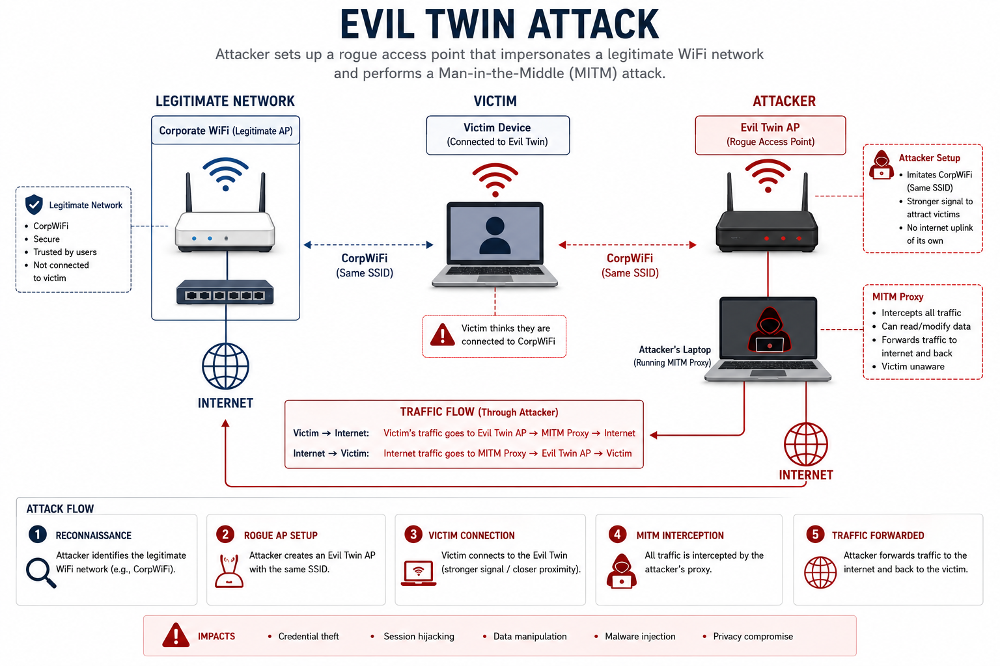

Topic 1.3
Best Practices for Public Networks
Chapter Contents
AP Cybersecurity Alignment
Unit 1: Introduction to Security · Topic 1.3, Best Practices for Public Networks
- 1.3.A Analyze Risk
Work out what kind of opponent is behind a given attack, how much capability they have, whether they are reusing tooling somebody else built or writing their own against undisclosed flaws, and what they are trying to get out of it. - 1.3.B Analyze Risk
Recognise the attacks that are specific to radio rather than to cable: a rogue access point impersonating a trusted network, deliberate radio interference that denies service, and roaming surveys that map where a network's signal reaches. - 1.3.C Mitigate Risk
Say what an ordinary user can actually do to keep sensitive data safe over the internet and over Wi-Fi, checking a network's name character by character before joining, judging whether the data at hand can tolerate an unencrypted link and the metadata such a link exposes, and understanding what a VPN does and does not move out of an adversary's reach.
Objective codes follow the AP Cybersecurity Course Framework (College Board, AP Career Kickstart). Objectives are paraphrased here, not quoted.
I. What a Hostile Network Can and Cannot See

Unlike wired networks that constrain data frames within physical structures (copper cables, fiber lines, closed switching closets), wireless networks (IEEE 802.11)IEEE 802.11, The WiFi Standard FamilyThe family of standards defining how WiFi works, published by the IEEE (Institute of Electrical and Electronics Engineers). The number 802.11 is the working group; the letter suffix indicates the generation: 802.11b/g/n (WiFi 4), 802.11ac (WiFi 5), 802.11ax (WiFi 6). Security protocols: WEP (broken), WPA (broken), WPA2 (widely deployed), WPA3 (current). IEEE 802.11-2020 is the current consolidated standard. 802.11 frames travel over radio frequencies (2.4GHz, 5GHz, 6GHz). The key weakness for security: radio waves propagate through walls and don't respect physical perimeters. transmit data over shared physical space using radio frequencies. Consequently, the physical boundary of the network is erased, allowing any receiver within range to capture transiting frames by configuring their network interface controller (NIC) into monitor modeMonitor Mode (Promiscuous Mode for WiFi)A special operating mode where the WiFi adapter captures ALL wireless frames in the air, not just frames addressed to itself. Like turning a radio to receive all frequencies simultaneously instead of just one station. Tools like Wireshark, tcpdump, and aircrack-ng use monitor mode. On Linux: `iwconfig wlan0 mode monitor`. Requires a WiFi adapter that supports this mode. Not all WiFi adapters support monitor mode. Popular monitor-mode adapters: Alfa AWUS036ACH, TP-Link Archer T4U. Used in legitimate security testing and wireless auditing. IEEE 802.11 frames captured in monitor mode include management frames, control frames, and data frames..
In public network environments (such as open hotspots, hotels, and airports), there is no encryption at the Data Link layerData Link Layer (OSI Layer 2)The second layer of the OSI networking model, responsible for transferring data between adjacent nodes on the same network. For WiFi, this is where 802.11 frames live. Open WiFi networks have no Layer 2 encryption: frames travel in cleartext over the air. WPA2/WPA3 add encryption at this layer. OSI Model Layer 2 corresponds to the IEEE 802.x standards. MAC addresses operate at Layer 2. Ethernet switches and WiFi APs operate at Layer 2. The Layer 2 attack surface: ARP spoofing, MAC flooding, deauthentication frame injection, Evil Twin attacks.. Because packets travel in cleartext over the air, an adversary can capture transiting frames to steal session tokensSession TokenA temporary secret identifier (usually stored in a browser cookie) that proves you're logged in. After you authenticate with username/password, the server gives you a session token. Every subsequent request includes this token to prove "I already logged in." If an attacker captures your session token (e.g., by intercepting your WiFi traffic on open networks), they can impersonate you without ever knowing your password. Session fixation, session hijacking, and cookie theft are all attacks on session tokens. Defense: Secure flag on cookies (HTTPS only), HttpOnly flag (no JavaScript access), SameSite=Strict (no cross-site sending). Session tokens should be 128+ bits of randomness per OWASP., credentials, and data payloads. Public access zones lack mutual authenticationMutual AuthenticationBoth parties verify each other's identity, not just the client proving itself to the server, but also the server proving itself to the client. Standard WiFi lacks mutual authentication: your phone doesn't verify the AP's identity before connecting. 802.1X with EAP-TLS provides mutual authentication (both client and server present X.509 certificates). This prevents Evil Twin attacks because an unauthorized AP cannot present a valid server certificate. Mutual authentication is also called "two-way authentication" or "bidirectional authentication." TLS does mutual auth when you configure client certificates. SSH does mutual auth via known_hosts verification + key-based login.. A client device trusts an Access Point (AP)Access Point (AP)The physical device (the "WiFi router" in your home) that creates the wireless network. An AP broadcasts its SSID ("COFFEE_SHOP_WIFI"), and clients connect to it. The critical vulnerability: APs are identified only by their SSID name, any attacker can broadcast the same SSID name and appear identical to the legitimate AP from the client's perspective. AP hardware operates at OSI Layer 2. Enterprise APs (Cisco Aironet, Aruba, Ruckus) have centralized management and rogue AP detection. Consumer APs are unmanaged and cannot detect Evil Twins. An Evil Twin AP only needs a stronger signal than the legitimate AP to win client connections. based solely on its broadcasted Service Set Identifier (SSID)SSID, Service Set IdentifierThe name of the WiFi network, what you see in your device's WiFi list ("Starbucks WiFi", "Airport_Free_Wifi", "HOME_NETWORK"). SSIDs are unverified: any device can broadcast any SSID. An attacker can set up a hotspot named "Starbucks WiFi" anywhere. Your phone may automatically connect to it if you previously connected to a real Starbucks WiFi, because devices remember SSIDs and reconnect automatically. Hidden SSIDs provide zero security, they can be discovered from probe requests. SSID length: 0-32 bytes. The 802.11 Beacon frame broadcasts the SSID every 100ms by default. Probe requests from devices searching for remembered networks can reveal which networks a device has previously connected to. name. Attackers exploit this lack of verification by deploying rogue wireless infrastructure to intercept and modify user communications.
A central method used in network interception is the Adversary-in-the-Middle (AitM)AitM, Adversary-in-the-Middle (formerly MITM)An attack where the attacker positions themselves between the victim and the legitimate destination, relaying (and potentially modifying) all communications. The victim thinks they're talking directly to the server; the server thinks it's talking directly to the victim; the attacker sees everything. On WiFi: the Evil Twin AP is the AitM position. Formerly called Man-in-the-Middle (MITM). Renamed to AitM by the security community for inclusive language. Tools: mitmproxy, ettercap, Bettercap, SSLStrip. Defenses: certificate pinning, mutual TLS, HSTS, HPKP (deprecated), DNSSEC. attack. An AitM attack occurs when an attacker positions their system between the victim client and the destination gateway. Once positioned, the attacker inspects, logs, or modifies traffic. To intercept encrypted HTTP web traffic, attackers perform cryptographic downgrade attacks. Rather than attempting to break the SSL/TLS encryption directly, the attacker intercepts the client's initial HTTPHTTP vs HTTPSHTTP (HyperText Transfer Protocol) sends data in plain text, like sending a postcard. Anyone who intercepts it can read it. HTTPS adds TLS (Transport Layer Security) encryption, the data is encrypted before transmission. The crucial vulnerability: most users type "bank.com" not "https://bank.com", so the browser initially makes an HTTP request, which SSLStrip can intercept before the upgrade to HTTPS happens. HSTS prevents this by caching the HTTPS requirement in the browser. HTTP: RFC 7230-7235 (2014). HTTPS = HTTP over TLS. TLS: RFC 8446 (TLS 1.3, 2018). TLS 1.0 and 1.1 are deprecated per RFC 8996 (2021). Port 80 = HTTP, Port 443 = HTTPS. request and strips the SSL configuration, forcing the client to communicate in cleartext while the attacker maintains a secure connection with the destination server.
1. The Threat Model Has Moved, and the Advice Has Not Kept Up
Much of the public guidance on hostile Wi-Fi is a fossil of 2010. In 2010, most of the web was unencrypted, session cookies rode over plain HTTP, and a Firefox extension called Firesheep let anyone at a coffee shop click a name in a sidebar and become that person on Facebook. That world is gone. Ubiquitous TLS, HSTS preloading, browsers that upgrade to HTTPS by default, and certificate transparency have collectively removed the attack that made public Wi-Fi genuinely frightening. Repeating the 2010 advice unchanged is not conservative; it is inaccurate, and it burns credibility that you will need when you tell someone about a risk that is current.
The scholarly move is to state precisely what an adversary in the network path retains. Assume the worst realistic case: the attacker operates the access point, the DHCP server, the DNS resolver, and the upstream router. What does that buy?
What the network still learns, even with everything encrypted:
- Every DNS query, unless the client is using DNS over HTTPS (RFC 8484) or DNS over TLS (RFC 7858). Plain DNS is UDP port 53, unauthenticated and unencrypted, and it names every host the device intends to contact before it contacts it.
- The destination hostname of every TLS connection, via the Server Name Indication extension. SNI is sent in the ClientHello, before any key exchange completes, and is therefore in cleartext even under TLS 1.3. Encrypted Client HelloECH, Encrypted Client HelloThe IETF TLS working group's mechanism for closing the SNI leak. The client encrypts the sensitive parts of its ClientHello (including the true server name) under a public key that the server publishes in DNS as an HTTPS resource record, and sends an innocuous outer ClientHello naming a shared "public name". An on-path observer sees only the public name. The scheme has a bootstrapping dependency that is easy to miss: the client must fetch the ECH configuration from DNS, so ECH is only meaningful when the DNS lookup itself is encrypted. ECH without DoH or DoT leaks the same hostname one layer down. Successor to the earlier ESNI drafts. Supported in Firefox and Chrome and deployed by Cloudflare; adoption is a function of both browser support and the origin publishing an HTTPS RR. closes this, but only where both endpoints support it and only if DNS is also encrypted.
- Destination IP addresses, packet sizes, and timing. Traffic analysis on this metadata alone is a mature research area and can identify visited pages within a site under favourable conditions.
- Everything carried by protocols that are still plaintext, legacy IMAP/SMTP without STARTTLS enforcement, plain FTP, SNMP, unencrypted MQTT, printer and file-share discovery chatter, and the surprisingly large population of embedded devices and mobile apps that never adopted TLS.
What the network can still actively do:
- Forge DNS answers, redirecting a name to attacker infrastructure. This does not by itself defeat TLS, the attacker still cannot produce a certificate for the name, but it enables the first-visit downgrade described below and supports convincing captive-portal deceptions.
- Downgrade a first, unprotected request. A user who types
example.comwith no scheme, on a domain that is neither HSTS-preloaded nor already in the browser's HSTS cache, historically made one plaintext HTTP request that an on-path attacker could capture and answer. Browsers have narrowed this substantially with automatic HTTPS upgrading, but the window is not identically zero across all clients and all domains. - Deny service selectively. An attacker who cannot read your traffic can still block it, and blocking the secure path is a classic way to push a user onto an insecure fallback they would otherwise never choose.
- Attack the device directly. Once you are on the same layer-2 segment, every service the device exposes to the local network, file sharing, media servers, debug ports, printer discovery, poorly written IoT companion apps, is reachable. This is now a larger practical risk on public networks than traffic interception.
2. Who Is On the Other End: A Working Taxonomy of Adversaries
"Hacker" is a category so broad that it predicts nothing. Defence, however, is a resource allocation problem, and resources should be allocated against a specific opponent. Two axes carry almost all of the useful information: capability, can this adversary only run tools others built, or can they build new ones and find flaws nobody has published? — and motivation, which determines what they consider a win and therefore how long they will persist. The classes below are the ones that recur in the attributed record, ordered by capability.
The unskilled operator using prebuilt tooling. The lower bound of capability is a person who buys or downloads a working attack and points it at whoever is nearby. Wireless is unusually accessible at this level because the required hardware is a consumer product: the Wi-Fi Pineapple sold by Hak5 as a penetration-testing appliance will run an evil twin and a credential-harvesting portal out of the box. The Australian prosecution in Case Study 1.3.3 is exactly this, the Australian Federal Police reported that the accused used a portable device of that type at three airports and on domestic flights. No exploit was written; no vulnerability was discovered. The technique was a decade old and the tool did the work. Adversaries at this level are stopped by patching known vulnerabilities and by controls that hold against off-the-shelf attacks, and they are numerous, which makes them the reason baseline hygiene matters at all.
Organised cybercrime. A commercially structured operation with development staff, a support function, an affiliate model and a revenue target. Its defining property is not skill but economic rationality: it will spend on an attack in proportion to expected return, and it will abandon a target that costs more than it yields. The mature ransomware ecosystem is the reference example, with the tooling built by one group and rented to affiliates who conduct intrusions. Wireless attacks are rarely part of this repertoire, and the reason is instructive, sitting in an airport to compromise one traveller does not scale, and phishing a hundred thousand mailboxes does. Adversaries whose motive is money go where the cost per victim is lowest.
Hacktivists. Motivated by a cause rather than by money, which changes the objective function: publicity is the goal, so the attacks are chosen to be visible, defacement, leak publication, denial of service timed to an event. Capability varies enormously because these are loose confederations rather than organisations. The practical consequence for a defender is that targeting is driven by symbolism rather than by asset value, so an organisation's threat model must include what it is publicly associated with, not merely what it holds.
Insiders. The person who already has credentials, already has physical access, and already knows where the valuable data is. Every control in this chapter is designed around an adversary outside the perimeter; an insider begins inside it. Motivation ranges from grievance to money to ideology, and a large fraction of insider incidents are not malicious at all but negligent, the employee who joins the conference-centre network without a VPN, or who accepts the certificate warning to get the presentation open. Insider risk is addressed by least privilege, separation of duties, and monitoring of authorised activity, none of which are network security controls.
Nation-state and state-sponsored operations. The upper bound: sustained funding, purpose-built tooling, undisclosed vulnerabilities, patience measured in years, and, the property that matters here, a human intelligence capability that can put an officer in the same building as the target. This last point is what makes state actors the only adversary class for whom wireless attacks are routinely worth the trouble, because the whole difficulty of a wireless attack is being physically present, and an intelligence service can afford to be.
Two attributed operations illustrate the top of the scale. DarkHotel, analysed at length in Section III, waited for named executives to check into specific hotels and served a malicious update to that guest alone. The second is more direct: in April 2018 four officers of the Russian military intelligence service's Unit 26165 travelled to the Netherlands on diplomatic passports and parked a hire car alongside the headquarters of the Organisation for the Prohibition of Chemical Weapons in The Hague, with a directional Wi-Fi antenna and associated equipment concealed in the boot and aimed at the building. Dutch military intelligence intercepted the team and expelled them; the operation was disclosed publicly on 4 October 2018, and the seized laptop showed prior wireless activity in other countries. This is the technique the industry calls a close access operation, and it exists because a network that is unreachable from the internet is still reachable from the car park.
II. Wi-Fi Handshakes, Evil Twins, and SSL Stripping
1. Evil Twin RSSI Frame Analysis
The Evil Twin attackEvil Twin AttackCreating a fake WiFi access point that clones a legitimate one, same SSID name, same channel, but with a stronger signal. Like an identical twin with evil intentions. Your device picks the strongest signal, so the attacker boosts their transmit power. To force clients to disconnect from the real AP and connect to the evil one, the attacker sends spoofed deauthentication frames. Tool: hostapd-wpe (for enterprise Evil Twins), airbase-ng (for WPA Personal). Hardware: a WiFi adapter that supports monitor mode + packet injection. Detection: wireless IDS sensors (e.g., Cisco Adaptive wIPS) detect duplicate SSIDs and alert administrators. relies on cloning the attributes of a legitimate Access Point: SSID, BSSIDBSSID, Basic Service Set IdentifierThe MAC address of the Access Point, a hardware identifier that looks like 00:14:bf:aa:bb:cc. While SSIDs are human-readable names, BSSIDs are hardware identifiers. Importantly: MAC addresses can be cloned (spoofed). An attacker's hardware can be configured to broadcast any BSSID, making the Evil Twin appear identical to the legitimate AP at the hardware level. MAC addresses are 48-bit identifiers. The first 24 bits identify the manufacturer (OUI). Spoofing: `ifconfig wlan0 hw ether 00:14:bf:aa:bb:cc` on Linux. IEEE 802.11 uses BSSID to distinguish between APs with the same SSID. If SSID AND BSSID match, the device sees them as identical, which is the Evil Twin goal. (MAC address), and channel. Because client devices connect automatically to the AP offering the strongest signal (RSSI)RSSI, Received Signal Strength IndicatorA measurement of how strong the received radio signal is, in dBm (decibels relative to 1 milliwatt). -30 dBm = very strong (right next to the AP). -70 dBm = weak (far away). -90 dBm = barely usable. The Evil Twin attacker boosts their transmitter power to -20 or -30 dBm, guaranteed to be stronger than the legitimate AP at -60 or -70 dBm. Your device picks the stronger signal. Most client devices automatically roam to the highest RSSI AP with the same SSID. Enterprise APs use coordinated RSSI management (802.11r Fast BSS Transition) to prevent rogue association. RSSI is not authenticated, attackers can blast high-power signals trivially with $30 of hardware., the attacker boosts their transmitter's RSSI value. To force a connected victim to transition to the rogue AP, the attacker sends spoofed 802.11 Deauthentication frames802.11 Deauthentication FrameA special WiFi management frame that tells a device "you are no longer authenticated with this network, disconnect immediately." The problem: in legacy 802.11 (before 802.11w), these frames are sent unencrypted with no authentication. Anyone can spoof the source address and send a fake deauthentication frame to any client, forcing them offline. Reason code 0x0007 = "Class 3 frame received from nonassociated station", the most common deauth code used in attacks. Tool: aireplay-ng --deauth. IEEE 802.11w-2009 (Protected Management Frames / PMF) adds cryptographic signing to management frames, preventing spoofed deauths. WPA3 mandates PMF. to the victim client on behalf of the legitimate AP. The following packet analysis demonstrates the structure of an 802.11 deauthentication packet injected by an attacker:
Frame 1422: 26 bytes on wire (208 bits)
IEEE 802.11 Deauthentication, Flags: ........
Type/Subtype: Deauthentication (0x000c)
Frame Control Field: 0x00c0
Version: 0
Type: Management frame (0)
Subtype: Deauthentication (12) ← Reason this disconnects the client
Flags: 0x00
Duration: 314 microseconds
Receiver address: 00:25:9c:12:34:56 ← Victim Client MAC
Destination address: 00:25:9c:12:34:56 ← Victim Client MAC
Transmitter address: 00:14:bf:aa:bb:cc ← Legitimate AP MAC (SPOOFED by attacker)
Source address: 00:14:bf:aa:bb:cc ← Legitimate AP MAC (SPOOFED by attacker)
BSSId: 00:14:bf:aa:bb:cc ← Legitimate AP MAC (SPOOFED by attacker)
Fragment number: 0
Sequence number: 4022
Reason code: 0x0007 (Class 3 frame from nonassociated station)
↑ No cryptographic signature, client cannot verify authenticity (pre-802.11w)When the victim client receives this frame, it disconnects from the legitimate AP. When scanning for available APs, the client associates with the attacker's Evil Twin AP, which is broadcasting the same BSSID but with a higher RSSI (e.g., -35 dBm vs. -72 dBm for the legitimate AP).
The root cause is a decision made in the original 802.11 design: management frames precede key establishment, so they were left unauthenticated. IEEE 802.11w-2009IEEE 802.11w-2009, Protected Management Frames (PMF)An amendment, later folded into the consolidated 802.11 standard, that extends cryptographic protection to the subset of management frames that can be sent after a key is established. Unicast robust management frames are protected with CCMP under the same temporal key as data frames; group-addressed ones use the Broadcast/Multicast Integrity Protocol (BIP) under a separate Integrity Group Temporal Key, carried in a Management MIC Information Element. A station with PMF active discards unprotected deauthentication and disassociation frames outright. PMF is optional in WPA2 and mandatory in WPA3. The Wi-Fi Alliance has required PMF capability for new certifications since 2018., folded into the consolidated standard and mandatory under WPA3, closes the specific hole exercised above. Its coverage is worth stating precisely, because the boundaries are where the remaining attacks live:
PROTECTED (robust management frames, post-key-establishment)
Deauthentication unicast: CCMP under the PTK's temporal key
Disassociation group: BIP under the IGTK, MMIE appended
Robust Action frames -> forged deauth is simply discarded by the client
SA Query procedure If the AP sees an UNPROTECTED (Re)Association
Request from an already-associated station, it
answers with status 30 (try again later) and
challenges the existing station. A live station
replies; a spoofed one cannot. Association
hijacking fails.
NOT PROTECTED
Beacon frames Until the Beacon Protection feature of the 2020
standard, beacons were unauthenticated -- so a
forged Channel Switch Announcement could still
move clients off-channel.
Probe Request / Response Sent before any key exists. Nothing to sign with.
Authentication / Likewise pre-key. The SA Query procedure above
Association Request is the mitigation, not frame protection.
The physical layer PMF is cryptography. It does not stop an
adversary from simply transmitting noise on the
channel, and RF jamming remains the irreducible
denial-of-service primitive against any radio.Two conclusions follow. First, PMF genuinely defeats the classic deauthentication flood, and any network still exposed to it in 2026 has PMF disabled or is running clients too old to support it. Second, PMF does not make a wireless network available, an attacker who merely wants you off the good network and onto his can still jam, and can still win the association by out-shouting the legitimate AP at the physical layer. Availability on shared radio spectrum is not a problem cryptography solves.
2. The WPA2 Four-Way Handshake, and Why It Can Be Cracked Offline
Understanding what WPA3 fixed requires first understanding what WPA2 does. The entire security of a WPA2-Personal network rests on one value, the Pairwise Master Key, which is a deterministic function of the passphrase and the network name:
$$\mathrm{PMK} = \mathrm{PBKDF2\text{-}HMAC\text{-}SHA1}(\text{passphrase},\ \text{SSID},\ 4096,\ 256\ \text{bits})$$
Read that carefully. The SSID is the salt. Two networks with the same passphrase and the same name have identical PMKs, everywhere in the world, forever, which is why precomputed PMK tables for names like linksys and NETGEAR have existed for two decades, and why an unusual SSID is a real, if modest, security control.
The PMK is never transmitted. The four-way handshake exists to prove both parties hold it and to derive fresh session keys:
Authenticator (AP) Supplicant (client)
AA = AP MAC SPA = station MAC
holds PMK holds PMK
M1 ----------- ANonce (random, NO MIC) ------------------->
picks SNonce, derives PTK
<---------- M2 SNonce + MIC(KCK, M2) ----------------------
derives PTK, verifies MIC
M3 ---- GTK encrypted under KEK + MIC(KCK, M3) ----------->
verifies MIC, INSTALLS TK
<---------- M4 ACK + MIC(KCK, M4) -------------------------
installs TK
PTK = PRF-384(PMK, "Pairwise key expansion",
min(AA,SPA) || max(AA,SPA) ||
min(ANonce,SNonce) || max(ANonce,SNonce))
PTK[ 0:16] = KCK EAPOL Key Confirmation Key (computes the MICs)
PTK[16:32] = KEK EAPOL Key Encryption Key (wraps the GTK in M3)
PTK[32:48] = TK Temporal Key (encrypts data, CCMP)Now count what an eavesdropper who captures M1 and M2 possesses. Both MAC addresses: public, in every frame header. ANonce: sent in cleartext in M1. SNonce: sent in cleartext in M2. The MIC over M2: sent in M2. The SSID: broadcast in every beacon. Every input to the PTK derivation except the PMK is therefore public, and the MIC is a checkable function of the PTK. The offline attack writes itself:
- Guess a passphrase.
- Compute $\mathrm{PMK} = \mathrm{PBKDF2}(\text{guess}, \text{SSID}, 4096)$.
- Derive the PTK from the captured nonces and MACs; take KCK.
- Recompute the MIC over the captured M2 and compare it to the captured value.
- On a match, the guess is the passphrase, and every frame in the capture is now decryptable.
The cost per guess is dominated by PBKDF2's 4,096 HMAC-SHA1 iterations, which is deliberate and does help. Measured on one RTX 4090, Hashcat mode 22000 (WPA-PBKDF2-PMKID+EAPOL) runs at 2,533,300 guesses per second. Put that against realistic passphrases. A ten-million-entry wordlist is exhausted in four seconds. An eight-character passphrase drawn uniformly from lowercase letters and digits ($36^8 \approx 2.8 \times 10^{12}$, expected search half that) takes about 6.4 days on that single card, a weekend, for a network anyone can sit outside of. Compare mode 22001, which supplies the PMK directly and skips PBKDF2 entirely: 275.3 MH/s, a hundredfold speedup, which is precisely the value an attacker extracts from precomputing PMKs against a popular SSID.
PMKID = HMAC-SHA1-128(PMK, "PMK Name" || AA || SPA)Every input other than the PMK is again public, so the PMKID is a directly crackable verifier, and obtaining it requires only that the attacker attempt to associate with the AP and read the first EAPOL frame it sends back. No client needs to be connected. No deauthentication frame is transmitted. Nothing about the attack is anomalous to a wireless IDS watching for deauth floods, because there is no flood. This is worth internalizing as a general pattern: defenders build detection around the noisy version of an attack, and the attack gets quieter.
3. What KRACK Actually Broke
KRACK is the most widely misdescribed vulnerability in wireless networking. It does not recover the Wi-Fi password. It does not break AES, or CCMP, or the PBKDF2 derivation, or the four-way handshake's key agreement. Mathy Vanhoef and Frank Piessens presented it at ACM CCS 2017 under the exact title of what it does: Key Reinstallation Attacks: Forcing Nonce Reuse in WPA2.
The vulnerability lives in the gap between a protocol specification and a protocol running over a lossy radio channel. Message 4 can be lost, so an access point that does not receive it retransmits message 3. A supplicant receiving a retransmitted message 3 was specified to accept it, and implementations, on accepting it, reinstalled the same temporal key and reset the associated packet number and replay counter to their initial values. An attacker in a channel-based man-in-the-middle position can withhold message 4 and force exactly that retransmission at a moment of his choosing.
Why resetting a counter is catastrophic requires one fact about CCMP. AES-CCMPCCMP, Counter Mode with CBC-MAC ProtocolWPA2's data-confidentiality protocol: AES in Counter (CTR) mode for encryption, plus CBC-MAC for integrity, over a 48-bit packet number used to build the per-frame nonce. Counter mode turns a block cipher into a stream cipher: the cipher encrypts a nonce-and-counter block to produce keystream, which is XORed with the plaintext. The security of every stream cipher rests on never reusing a (key, nonce) pair, because the keystream is a deterministic function of exactly those two values. Specified in IEEE 802.11i and built on NIST SP 800-38C. GCMP, used by WPA3 and 802.11ad/ac high-throughput modes, is the analogous construction over Galois/Counter Mode and is strictly less forgiving of nonce reuse. is AES in counter mode: the cipher generates a keystream from the key and a nonce built from the packet number, and that keystream is XORed with the plaintext. Reset the packet number and the device emits the same keystream again under the same key. If $C_1 = P_1 \oplus KS$ and $C_2 = P_2 \oplus KS$, then $$C_1 \oplus C_2 = P_1 \oplus P_2$$ and the keystream has cancelled out.
Any known or guessable plaintext, and TLS records, DHCP exchanges and HTTP headers supply plenty, unravels the other. Frames can also be replayed, because the replay counter went back to zero along with the nonce.
Three refinements make the picture worse and are the reason the disclosure moved so many vendors so quickly:
- GCMP is worse than CCMP. In Galois/Counter Mode the authentication subkey is derived from the encryption key, so nonce reuse permits recovering it. That upgrades the attack from decryption to forgery in both directions. WPA3 and 802.11ad use GCMP.
- Some clients installed an all-zero key. wpa_supplicant versions 2.4 and 2.5, shipped in a very large number of Linux and Android 6.0-and-later devices, cleared the temporal key from memory after installing it. Reinstallation therefore installed all zeros. On those devices the traffic was not merely replayable; it was in effect unencrypted.
- It was not only a client-side bug. CVE-2017-13082 covers an access point accepting a retransmitted 802.11r Fast BSS Transition Reassociation Request and reinstalling the PTK, so infrastructure needed patching too. The full set runs from CVE-2017-13077 (PTK-TK in the four-way handshake) through CVE-2017-13088 (IGTK in a WNM Sleep Mode Response), enumerating each key and each handshake in which it could be reinstalled.
The fix is one sentence long and fully backward compatible: a station must never reinstall a key it has already installed. That is why KRACK was resolved by software updates rather than by a new standard, and why the WPA2 protocol itself was not withdrawn. The interesting question KRACK leaves behind is not cryptographic but economic, a patchable flaw in a protocol embedded in a billion devices with no update path is, in practice, a permanent flaw for a large fraction of them.
4. WPA3 and SAE: A Password-Authenticated Key Exchange, and Its First-Generation Flaws
WPA2-Personal's structural defect is that the PMK is a pure function of the passphrase, so a passive observer who captures one handshake acquires an offline verifier. WPA3-Personal removes that by replacing the PSK exchange with SAESAE, Simultaneous Authentication of EqualsA balanced password-authenticated key exchange designed by Dan Harkins, originally for 802.11s mesh networks and adopted as WPA3-Personal's handshake. "Balanced" means neither party is client or server; both prove knowledge of the same low-entropy secret and derive a high-entropy shared key. The underlying construction is the Dragonfly PAKE. Dragonfly is specified for general use in RFC 7664 (CFRG); SAE's 802.11 profile is in the IEEE 802.11 standard. The critical property is that the exchange leaks no offline verifier: a passive observer obtains nothing testable against a password guess., a password-authenticated key exchange built on the Dragonfly protocol (RFC 7664).
The exchange has two round trips. In commit, each party derives a password element $\mathrm{PWE}$ — a point on the negotiated elliptic curve, deterministically from the password and both MAC addresses. Each then picks two random values, a private scalar and a mask, and sends $$\text{scalar} = (\text{private} + \text{mask}) \bmod r, \qquad \text{element} = -\,\text{mask} \cdot \mathrm{PWE}$$ Each side combines the peer's scalar and element with its own private value to reach the same shared secret, from which the PMK and a confirmation key are derived. In confirm, each sends a hash over the transcript, proving it reached the same secret.
Two properties follow, and both are the point of the design:
- No offline verifier. A passive observer sees scalars and elements, but the private value is hidden behind the random mask and recovering it means solving a discrete logarithm. There is nothing in the transcript against which to test a password guess. Every guess must be made online, as a fresh exchange with the access point, which can count and throttle them. This is the whole difference from WPA2, and it is enormous: it converts an attack limited by GPU throughput into one limited by the AP's willingness to answer.
- Forward secrecy. The session key depends on fresh random values, not on the password alone. An adversary who records traffic today and learns the password next year cannot decrypt the recording. Under WPA2, that same adversary can.
Honesty requires the sequel. In April 2019 Mathy Vanhoef and Eyal Ronen published Dragonblood, a security analysis of the SAE handshake and EAP-pwd. They found that the original "hunting and pecking" loop used to derive $\mathrm{PWE}$ took a password-dependent number of iterations and left password-dependent cache access patterns, enabling password partitioning attacks: an adversary who can measure timing remotely, or observe cache behaviour on the same machine as the access point's driver, learns enough to prune the password space and mount an efficient offline search after all, recovering by side channel precisely the offline verifier SAE was designed not to provide. They also demonstrated downgrade attacks, including forcing a device onto a weaker elliptic curve, and denial of service by exploiting the commit phase's computational cost. The relevant identifiers are CVE-2019-9494 (cache-based side channel) and CVE-2019-9495 (timing side channel), with related issues in EAP-pwd.
5. SSL Stripping AitM Network Capture
Once the victim is routing traffic through the Evil Twin, the attacker executes SSL strippingSSL Stripping (SSLStrip)A downgrade attack that intercepts HTTP traffic and prevents it from being upgraded to HTTPS. The attacker's proxy fetches the HTTPS version from the server, then serves a plain HTTP version to the victim. The victim sees "http://bank.com" instead of "https://bank.com" and their login credentials travel unencrypted. Named after Moxie Marlinspike's 2009 tool. Marlinspike, M. (2009). New Tricks for Defeating SSL in Practice. Black Hat DC 2009. The attack is defeated by HSTS: if the browser has cached the HSTS policy for a domain, it refuses to connect over HTTP at all, before even sending the initial request. The HSTS preload list in Chrome/Firefox eliminates the first-connection vulnerability.. Moxie MarlinspikeMoxie MarlinspikeA cryptographer and co-founder of Signal (the encrypted messaging app). In 2009, he presented SSLStrip at Black Hat, demonstrating how HTTPS downgrades could intercept "secure" traffic. He later created Signal Protocol (used by WhatsApp, Signal, and others). His work catalyzed the adoption of HSTS. Fun fact: "Moxie Marlinspike" is a pseudonym, his real name is Matthew Rosenfeld. Marlinspike, M. (2009). New Tricks for Defeating SSL in Practice. Black Hat DC. See also: Marlinspike, M. (2013). SSL and the Future of Authenticity. Black Hat. His work on HSTS and certificate pinning shaped modern TLS deployment.'s SSLStrip approach intercepts proxy traffic, parsing HTTP responses for links starting with https:// and replacing them with http://. The following simulation log captures the network events during an SSL stripping attack:
=== AitM SSLStrip Proxy Log ===
[192.168.1.102:40231] GET http://www.banking-portal.com/login ← VICTIM sends HTTP (unencrypted)
[Proxy Action] Intercepted. Forwarding to server as HTTPS:
[Proxy → Server] GET https://www.banking-portal.com/login ← ATTACKER uses HTTPS to server
[Server → Proxy] HTTP/1.1 200 OK
Set-Cookie: session_id=XYZ987654321; Secure; HttpOnly
Body: <a href="https://www.banking-portal.com/auth">Secure Login</a>
[Proxy Action] MODIFYING response before sending to victim:
1. Strip "Secure" flag: Set-Cookie: session_id=XYZ987654321; HttpOnly ← cookie now sent over HTTP
2. Rewrite HTTPS → HTTP: href="http://www.banking-portal.com/auth" ← removes encryption
[Proxy → Client] HTTP/1.1 200 OK (DOWNGRADED)
Set-Cookie: session_id=XYZ987654321; HttpOnly ← cookie flows over cleartext HTTP
Body: <a href="http://www.banking-portal.com/auth">Secure Login</a>
[192.168.1.102:40232] POST http://www.banking-portal.com/auth ← VICTIM posts credentials over HTTP!
POST Data: username=user123&password=SecretPassword1!
[Proxy Action] CREDENTIAL HARVESTED: [user123 / SecretPassword1!]6. HTTP Strict Transport Security (HSTS, RFC 6797)
To mitigate SSL stripping, servers enforce HSTSHSTS, HTTP Strict Transport SecurityA web security mechanism where the server tells browsers: "For the next X days, always use HTTPS to access this domain, never HTTP, not even for the initial request." Once the browser caches this directive, SSLStrip becomes impossible: the browser refuses to make the initial HTTP request that SSLStrip needs to intercept. RFC 6797 (2012). The HSTS header is only accepted over HTTPS (never over HTTP, which would be insecure). HSTS preload goes further: a list of domains hardcoded into Chrome, Firefox, and Safari that are ALWAYS HTTPS, even before the first connection. Submit at hstspreload.org. Currently ~150,000 domains on the preload list.. When a browser receives an HSTS header, it caches the policy client-side. The header contains several directives:
Strict-Transport-Security: max-age=63072000; includeSubDomains; preloadmax-age=63072000: Dictates how long (in seconds, 63072000 = 2 years) the browser must force HTTPS for the domain.includeSubDomains: Extends the policy to all subdomains (e.g.,auth.banking-portal.com).preload: Authorizes browsers to include the domain in the hardcoded HSTS preload list built into Chrome, Firefox, and Safari. This protects the user even on their first connection attempt.
RFC 6797 §11.2 names the residual weakness in the specification itself: the bootstrap problem. A policy that arrives over the network can only protect connections made after it arrives. On a genuinely first visit to a domain, with no cached policy and no preload entry, the browser has nothing on which to base a refusal. The preload list, a set of names compiled into the browser binary and shipped with it, submitted at hstspreload.org, closes the gap for domains that opt in, at the price of a commitment that is slow and awkward to reverse.
Two further points separate a working understanding of HSTS from a superficial one.
HSTS can be evaded rather than broken. In 2014 Leonardo Nve demonstrated the technique usually called sslstrip2: rather than attacking a hostname the browser has an HSTS policy for, the proxy rewrites links to sibling hostnames that no policy covers, wwww.example.com, web.example.com, social.example.com, and pairs the rewrite with a rogue DNS server that resolves those invented names to the attacker. The browser has no cached policy for a name it has never seen, so it issues plaintext HTTP without complaint, and the address bar shows a name plausible enough to survive a glance. This is exactly what includeSubDomains plus preloading of the registrable domain is for, and it is why publishing HSTS on www.example.com alone is a half-measure.
The Secure cookie flag is weaker than it looks. Marking a cookie Secure stops the browser sending it over plaintext, which is the property everyone knows. It does not stop a plaintext response from setting or overwriting one, an on-path attacker can inject a Set-Cookie over HTTP that the browser will subsequently present on the HTTPS site, a class of attack known as cookie tossing or cookie forcing. Confidentiality and integrity are separate properties and the flag only supplies the first. The mitigation is the __Host- cookie name prefix, which browsers enforce by refusing any such cookie that is not set over a secure origin, without a Domain attribute, and with Path=/.
Modern browsers have also moved the baseline underneath all of this. Chrome ships automatic HTTPS upgrades, navigations typed without a scheme are attempted over HTTPS first and fall back only on failure, and Firefox offers HTTPS-Only Mode, which turns the fallback into a warning interstitial. This narrows the plaintext-first window well beyond what HSTS alone achieved, and it is the single largest reason the 2010-era public-Wi-Fi threat model no longer describes reality. It narrows the window rather than eliminating it: fallback still exists, non-browser clients frequently do not implement any of this, and the ecosystem of applications and embedded devices that speak HTTP is still very much alive.
7. What Actually Protects You: Certificate Path Validation
TLS is what makes a hostile network survivable, and the load-bearing part of TLS is not the encryption, it is the authentication. Encryption without authentication merely guarantees a private conversation with someone; the question is who. That question is answered by certificate path validationCertification Path Validation (RFC 5280 §6)The algorithm a TLS client runs to decide whether to trust a server's certificate. It walks the chain from the leaf certificate up through any intermediates to a root already present in the client's trust store, and at each step verifies the issuer's signature over the subject's certificate, that the certificate is within its validity period, that a CA certificate carries basicConstraints with cA:TRUE and an appropriate pathLenConstraint, that key usage and extended key usage permit the operation, that any name constraints are satisfied, and that the certificate has not been revoked. Failure at any step aborts the connection. RFC 5280 (2008) specifies X.509 and the path validation algorithm; RFC 9525 (2023) specifies how the server identity in the certificate is matched against the name the client intended to reach, superseding RFC 6125., specified in RFC 5280 §6, together with the identity-matching rules of RFC 9525.
An adversary running the access point can send you any bytes he likes, but he cannot produce a certificate chaining to a root in your trust store that names bank.example.com, because that requires a CA's private key. Certificate Transparency raises the cost further: under RFC 9162, major browsers require a certificate to arrive with signed timestamps proving it was submitted to public append-only logs, so a mis-issuance is discoverable by the domain owner rather than silently effective. The historically catastrophic version of this attack, the 2011 DigiNotar compromise, in which a breached Dutch CA issued a fraudulent *.google.com certificate used against Iranian users, is precisely what CT was built to make detectable.
8. Jamming and War Driving: Two Attacks That Need No Protocol Flaw
Everything above concerns confidentiality and authentication, and every one of those attacks has a cryptographic answer. The two attacks in this section have none, because neither depends on a defect in 802.11. They depend on the fact that radio is a shared medium and that radio does not stop at a wall.
Jamming is the deliberate radiation of energy in the band a network occupies, at a power level sufficient to raise the noise floor above the point at which receivers can recover a signal. It is a denial-of-service attack conducted at the physical layer. Because 802.11 uses carrier sense multiple access with collision avoidance, a station that senses the medium as busy defers transmission; a jammer that keeps the channel permanently busy therefore silences well-behaved stations without transmitting a single valid frame. Cheaper still is the reactive jammer, which listens and emits a short burst only when it detects a transmission beginning, corrupting the frame's checksum. The receiver discards it, the sender's acknowledgement never arrives, and the sender retries, backs off, and eventually falls to its lowest data rate, a network that appears merely slow and broken rather than under attack.
No amount of encryption addresses this. Protected Management Frames stop a forged deauthentication, but PMF is cryptography applied to frames, and a jammer does not send frames. The mitigations are correspondingly physical and procedural: spectrum analysis to identify the interference and locate its source by direction-finding, automatic channel and band selection to move the network away from a narrowband source, and, where availability genuinely matters, a network design that does not have a single radio path as its only route. In the United States the operation, marketing, and sale of signal jammers is prohibited under the Communications Act of 1934 §333 and the Federal Communications Commission's rules, and the FCC has issued substantial forfeitures against operators; the legal control here is doing work the technical controls cannot.
War driving is reconnaissance rather than attack: moving through an area with a receiver and logging the networks whose beacons are audible, together with their names, security configuration, channel, signal strength and, when a satellite receiver is attached, position. The name is a pun on war dialling, the practice of calling telephone number ranges in sequence to find modems, which the 1983 film WarGames put into general vocabulary. The survey is entirely passive when done properly, the adversary transmits nothing and receives beacon frames that the access point is broadcasting to everyone by design, roughly ten times a second, so there is nothing to detect and nothing to block.
What the survey yields is the input to every later decision. It establishes which access points use obsolete security, which use default network names implying default administrative credentials, and, critically, how far outside the building the signal reaches. That last item converts an abstract question about wireless risk into a measurement: if an organisation's network is usable from the public pavement, from the neighbouring tenant's floor, or from the visitor car park, then its wireless attack surface includes everyone who can stand in those places. The response is to treat radio coverage as a design parameter, survey the boundary, reduce transmit power and choose antenna patterns so that usable signal approximates the physical premises, and accept that this shrinks the exposure rather than eliminating it, because a directional antenna on the far side of the road recovers signal that an ordinary client cannot.
III. Case Studies: DarkHotel, KRACK, and an Evil Twin Prosecution
Case Study 1.3.1: DarkHotel, Hotel Networks as Targeted Infrastructure
In November 2014 Kaspersky Lab's Global Research and Analysis Team published its analysis of a long-running cyber espionageCyber EspionageUsing cyberattacks to steal secrets from governments, corporations, or individuals, not for financial gain but for intelligence and political advantage. Like traditional espionage, but done over networks instead of in person. Dark Caracal is attributed to the Lebanese General Directorate of General Security (GDGS), a state intelligence agency. The MITRE ATT&CK framework tracks espionage techniques. State-sponsored espionage groups: APT28 (Russia), APT41 (China), Lazarus (North Korea), Dark Caracal (Lebanon). Unlike ransomware (financially motivated), espionage attacks aim to go undetected as long as possible to maximize intelligence collection. campaign it named DarkHotel, which had by then been operating for several years. The campaign is the cleanest documented instance of a hostile network used with precision rather than opportunism, and its details are worth more than the general warnings usually derived from it.
The operators did not stand in a coffee shop harvesting whatever passed. They compromised the networks of luxury hotels, waited for a named individual to check in, and delivered a payload to that individual and no one else, then removed their tooling from the hotel network afterward. Kaspersky's victim set was executives and senior technical staff in defense, manufacturing, automotive, pharmaceuticals, private equity and electronics: the sort of person whose laptop is worth a bespoke operation. The highest volume of hotel-network activity ran from roughly 2010 through 2013, with related activity continuing into 2014.
The delivery mechanism is the part that matters technically. On connecting to the hotel network, the target was presented with what appeared to be a routine update prompt for common software, an Adobe Flash or Google Toolbar update, delivered through the update channel itselfSoftware Update HijackingAn adversary on the network path can substitute a malicious binary for a legitimate one whenever the download is unauthenticated, over plain HTTP, or over HTTPS the attacker has broken, or where the client fetches over TLS but never checks a signature on the payload. The victim installs the malware personally, with full privileges, having been prompted by something that looks exactly like the routine maintenance they have been trained to accept. The general defense is signed updates verified against a pinned publisher key independently of the transport, with rollback protection and, in the strongest designs, a transparency log so that a targeted build cannot be served to one victim without becoming publicly visible. Apple's notarization and Gatekeeper, Windows Authenticode, and Android package signing all implement the signature half., that installed a surveillance implantSurveillance Implant (Remote Access Trojan)Malware whose objective is persistent, quiet access rather than immediate disruption: keystroke capture, screenshots, file and credential exfiltration, and in mobile variants microphone, camera and location. Unlike ransomware, which announces itself because its business model requires the victim to know, an espionage implant's success is measured in how long it goes unnoticed, DarkHotel's operators had been active for several years before the campaign was characterized. Relevant MITRE ATT&CK tactics: TA0011 (Command and Control), commonly over T1573 (Encrypted Channel), and TA0010 (Exfiltration). Attribution and detection of this class of implant is the specialty of Kaspersky's GReAT, Citizen Lab, Lookout, and Amnesty International's Security Lab. alongside a working copy of the advertised software.
What made the prompt convincing was cryptographic rather than cosmetic. The operators presented forged digital certificates that browsers and installers accepted, obtained by factoring the weak public keys of real 512-bit RSA certificates, recovering the corresponding private keys and using them to produce signatures that validated correctly. This is one of the very few documented instances of an adversary defeating a code-signing check by breaking the underlying key rather than by stealing it or by exploiting a validation bug, and it is the reason 512-bit RSA is not merely deprecated but forbidden.
Case Study 1.3.2: KRACK, 2017, A Patchable Flaw in Unpatchable Devices
On 16 October 2017 Mathy Vanhoef published the KRACK disclosure, with the accompanying paper appearing at ACM CCS days later. The technical content is analyzed in Section II; what makes this an instructive incident rather than merely a vulnerability is how the remediation went.
The flaw was in the standard's handling of retransmitted handshake messages, so essentially every implementation of WPA2 was affected, every phone, laptop, router, access point, printer, thermostat, camera, industrial sensor and car head unit shipped since 2004. The coordinated disclosure was handled well: US-CERT notified vendors in late August 2017, and major operating systems had patches available at or shortly after publication. The fix itself was trivial in engineering terms, a single rule that a station must not reinstall a key it already holds, fully backward compatible with unpatched peers.
And yet the fix reached only the devices that had a maintained update path. A Windows laptop, a current iPhone, a supported Linux distribution: patched within days. A consumer access point three years past its support window, an Android handset whose vendor had stopped shipping updates, a wireless sensor with firmware written once and burned into a product with a fifteen-year service life: not patched then, not patched now. The population of permanently vulnerable WPA2 devices did not decline because they were fixed; it declines only as they are discarded.
Case Study 1.3.3: An Evil Twin Prosecution, Australia, 2024
Evil twin attacks are frequently demonstrated and rarely prosecuted, which makes this case unusually useful: it is a documented instance with charges, a device, an evidentiary record and a sentence, rather than a conference demo.
In April 2024 employees of an Australian domestic airline noticed a suspicious Wi-Fi network during a flight and reported it. The Australian Federal Police searched a passenger's hand luggage on his arrival at Perth Airport on 19 April 2024 and seized a portable wireless access device, a laptop and a mobile phone. According to the AFP's media release of 28 June 2024, examination of the seized devices found fraudulent Wi-Fi access pages and dozens of personal credentials belonging to other people. The alleged operation ran at Perth, Melbourne and Adelaide airports and on domestic flights.
The method was the one described in Section II, executed with commodity equipment. The portable access point broadcast an SSID resembling the venue's free Wi-Fi. A device that associated was presented with a portal page requesting an email address and password, or a social media login, "to connect", a request the real network never makes. The AFP charged nine offences: three counts of unauthorised impairment of electronic communication (maximum ten years), three counts of possession or control of data with intent to commit a serious offence (maximum three years), one count of unauthorised access to or modification of restricted data (maximum two years), one count of dishonestly obtaining personal financial information (maximum five years), and one count of possession of identification information (maximum three years). The device seized was a portable wireless auditing appliance of the kind sold commercially for penetration testing, which is worth noting because it establishes the capability level involved: the operation required no exploit development and no undisclosed vulnerability, only the purchase of a tool that performs the attack as a configured feature. He pleaded guilty and was sentenced in the Perth District Court on 28 November 2025 to seven years and four months' imprisonment, with parole eligibility after five years; the investigation also uncovered years of unrelated offending against private online accounts.
The AFP's own advice in the release is the most compact statement of the defense anywhere in this chapter: to join a free Wi-Fi network you should not have to enter any personal details, and specifically not an email or social media login. There is no technical reason a network needs your password to give you an IP address. The request is the attack.
Two mechanics deserve separating out. The first is DNS hijackingDNS HijackingAnswering a client's name-resolution queries with attacker-chosen addresses. On a network the adversary controls, this is trivial: DHCP hands the client the adversary's resolver, and plain DNS carries no authentication, so any answer is accepted. It does not by itself defeat TLS, the redirected server still cannot present a valid certificate for the name, but it enables convincing captive-portal deceptions, supports the lookalike-hostname evasion of HSTS, and reveals every host the device intends to contact. Encrypted transports (DNS over HTTPS, RFC 8484; DNS over TLS, RFC 7858) remove the interception; DNSSEC (RFC 4033–4035) removes the forgery by signing the records, and the two solve genuinely different halves of the problem., which requires no exploit at all when the adversary is also the DHCP server. The second is the reason a portal page is used to ask for credentials rather than TLS interception being attempted: the operator of an evil twin cannot read HTTPS traffic, so he does not try. He asks you to type the credential into a page he wrote. This is social engineering wearing a network's clothes, and it works against exactly the users who have been told that the danger of public Wi-Fi is eavesdropping.
The residual technical exposure is narrower than the popular account but not zero, and it is concentrated on domains outside the browser's hardcoded HSTS preload listsHSTS Preload ListA hardcoded list of domain names built into Chrome, Firefox, Safari, and Edge. Every domain on this list is permanently forced to HTTPS, the browser never even attempts an HTTP connection, regardless of any HSTS headers. This defeats the TOFU (Trust-On-First-Use) problem for preloaded domains. Currently ~150,000 domains preloaded. Submit at hstspreload.org. The list is maintained by Google and imported by other browsers. Requirements: serve HTTPS, have a valid HSTS header with max-age ≥ 1 year, includeSubDomains, and preload directive. Removing from the list is slow and not guaranteed. Permanent commitment: if you ever need to serve HTTP (e.g., legacy clients), preloading becomes a liability., and on the large population of mobile applications and embedded clients that never adopted HSTS, certificate pinning, or in some cases TLS at all. A browser visiting a preloaded banking domain on an evil twin is genuinely safe. A ten-year-old point-of-sale terminal, a fitness tracker's companion app, or a corporate line-of-business application written in 2013 may not be.
IV. Securing Wireless Use: WPA3, 802.1X, HSTS, and VPNs
Organizations must secure network communications on public and wireless infrastructure by enforcing the following layered controls:
1. Transition to WPA3 Security (IEEE 802.11ax + 802.11w)
Organizations must migrate from WPA2 to WPA3WPA3, Wi-Fi Protected Access 3The current WiFi security standard (2018), replacing WPA2. The key improvements: (1) SAE key exchange replaces PSK 4-way handshake, resistant to offline dictionary attacks. (2) PMF (802.11w Protected Management Frames) is MANDATORY in WPA3, prevents deauth frame spoofing. (3) WPA3-Enterprise uses 192-bit security suite (stronger than WPA2's 128-bit). (4) OWE (Opportunistic Wireless Encryption) adds encryption even to "open" networks with no password. WPA3 certification began June 2018 by Wi-Fi Alliance. WPA3-Personal uses SAE (Simultaneous Authentication of Equals). WPA3-Enterprise adds Suite B cryptography. All WPA3 devices are required to implement 802.11w PMF. The reference: IEEE 802.11-2020 consolidates WPA3 amendments.. WPA3 replaces the Pre-Shared Key (PSK) 4-way handshake, which is vulnerable to offline dictionary attacks via handshake capture, with Simultaneous Authentication of Equals (SAE)SAE, Simultaneous Authentication of Equals (Dragonfly)The key exchange protocol used by WPA3, replacing WPA2's PSK 4-way handshake. The crucial difference: SAE requires active, real-time participation from both client and AP for every authentication attempt. An attacker cannot capture the handshake and brute-force the password offline, they must attempt each guess live against the AP (rate-limited by the AP). SAE is based on the Dragonfly protocol (RFC 7664), a zero-knowledge Diffie-Hellman variant. WPA2 vulnerability: capture the 4-way handshake once, then take it home and run hashcat at 10 billion guesses/second. SAE defeats this: each offline-guessed password requires a new active interaction with the AP. Forward secrecy: SAE derives unique session keys for each connection, so compromising the password doesn't decrypt previously captured sessions., based on the Dragonfly key exchange protocol. SAE enforces forward secrecyPerfect Forward Secrecy (PFS)A cryptographic property ensuring that even if the long-term secret (the WiFi password, the TLS private key) is compromised in the future, previously captured encrypted sessions cannot be decrypted retroactively. Each session gets its own ephemeral (temporary) key, derived fresh, never stored. WPA3/SAE provides forward secrecy: capturing WiFi traffic now and getting the password later doesn't let you decrypt the old traffic. TLS 1.3 mandates forward secrecy using ECDHE. The opposite: WPA2 captures one handshake, gets the password (by cracking the handshake), and can decrypt all past captured traffic. WPA3 SAE: even if you steal the password, you can only attack new connections, not past ones. Standard: RFC 7364 on forward secrecy in TLS., preventing attackers from decrypting captured wireless traffic even if they obtain the network password.
# Wireless LAN Controller, Enable WPA3-SAE + 802.11w PMF
wlan security wpa akm sae # Enable SAE key exchange (replaces PSK)
wlan security wpa wpa3 # Set WPA3 mode
wlan security pmf required # 802.11w PMF: mandatory (rejects non-PMF clients)
wlan security pmf association-comeback 3 # Comeback timer: 3 seconds
wlan security pmf sa-query-timeout 200 # SA Query timeout: 200ms
# Verify:
show wlan 1 | include PMF
# Output: PMF: Required (clients without PMF support will be rejected)
# Management Frame Protection: Enabled
# Deauthentication attack mitigation: Active2. Implementing Enterprise-Grade 802.1X Authentication
Deploy IEEE 802.1XIEEE 802.1X, Port-Based Network Access ControlA standard that controls which devices can connect to a network by requiring authentication before allowing network access. Like a security checkpoint at the network port: your device must prove its identity to a RADIUS authentication server before traffic is allowed through. Used in both wired and wireless networks. Architecture: Supplicant (client) ↔ Authenticator (switch/AP) ↔ Authentication Server (RADIUS). The AP acts as a pass-through, forwarding EAP messages between the client and the RADIUS server. Success: AP opens the "controlled port." Failure: only the "uncontrolled port" is accessible (used for re-authentication only). Deployed in every enterprise WiFi network. Consumer APs don't support 802.1X (cost and complexity). network access control. Use EAP-TLSEAP-TLS, Extensible Authentication Protocol with TLSThe most secure WiFi authentication method. Both the client AND the server present X.509 digital certificates and verify each other's certificate. This is the key advantage over password-based WiFi: an Evil Twin access point cannot present a valid server certificate (because it doesn't have the real server's private key), so the authentication fails and the client never connects to the Evil Twin. EAP-TLS flow: Client sends Certificate → Server verifies with CA → Server sends Certificate → Client verifies with CA → Mutual TLS handshake → session key derived. Requires a PKI (Public Key Infrastructure): a Certificate Authority (CA) to issue client and server certs. Enterprise RADIUS servers: FreeRADIUS, Cisco ISE, Microsoft NPS. The strongest EAP type; used by US DoD networks. (Extensible Authentication Protocol-Transport Layer Security) for enterprise wireless networks. EAP-TLS mandates mutual authentication, requiring both the client and the authentication server to present valid X.509 digital certificatesX.509 CertificateA standardized digital identity document binding a public key to an identity (domain name, organization, person), signed by a Certificate Authority (CA). Like a digital passport, the CA is the government that issued it, and anyone can verify the signature. WiFi EAP-TLS uses X.509 certs for both client and server. X.509 is defined in RFC 5280. Fields: Subject (who), Issuer (CA), Valid From/To, Public Key, Signature. Certificate chain: End-entity cert → Intermediate CA → Root CA. HTTPS websites use X.509 certs for the TLS handshake. Clients have Root CA certificates pre-installed to verify server certs. For WiFi: each employee device gets a client certificate (usually auto-enrolled via Active Directory Certificate Services or SCEP)., preventing the connection of unauthorized clients and blocking Evil Twin access points.
3. Mandatory Client-Side Protections
Configure company assets with the following layered settings:
- Enforce the use of an Always-On Virtual Private Network (VPN)VPN, Virtual Private NetworkA technology that creates an encrypted "tunnel" between your device and a trusted server, routing all your traffic through that tunnel. Even if you're on a hostile WiFi network (like an Evil Twin), the attacker can only see encrypted VPN packets, the contents are inaccessible. Like driving through a city in an armored car: the driver knows your route, but nobody can see inside or interfere with what you're transporting. VPN protocols: WireGuard (modern, fast, 4,000 lines of code), OpenVPN (mature, open-source), IPsec/IKEv2 (enterprise standard), L2TP/IPsec (legacy). Corporate "Always-On VPN" solutions: Cisco AnyConnect, Palo Alto GlobalProtect, Zscaler Private Access. NIST SP 800-77 covers IPsec VPN guidelines. WireGuard is now in the Linux kernel (5.6+). using WireGuard or IPsec to encapsulate all egress traffic in an encrypted tunnel.
- Enable DNS over HTTPS (DoH)DNS over HTTPS (DoH) and DNS over TLS (DoT)Encrypted versions of DNS queries. Standard DNS (UDP port 53) is unencrypted, an Evil Twin AP can intercept and modify DNS responses (DNS hijacking). DoH wraps DNS queries in HTTPS (port 443), making them look like regular web traffic and unreadable to the attacker. DoT (port 853) is the same idea but uses raw TLS. DoH: RFC 8484 (2018). DoT: RFC 7858 (2016). Supported by: Chrome, Firefox (enabled by default), iOS 14+, Android 9+. Providers: Cloudflare (1.1.1.1), Google (8.8.8.8), Quad9 (9.9.9.9). Corporate DNS-over-HTTPS can point to an internal resolver, maintaining control while encrypting the query. An Evil Twin cannot hijack DoH queries because they're encrypted and go directly to the provider. or DNS over TLS (DoT) to prevent local network DNS spoofing and redirection.
- Submit all corporate domain names to the browser HSTS preload listhstspreload.orgThe submission portal for adding domains to Chrome's hardcoded HSTS preload list. Requirements to qualify: (1) Serve valid HTTPS on all subdomains. (2) Redirect HTTP → HTTPS. (3) Serve an HSTS header with max-age ≥ 1 year, includeSubDomains, and preload directives. (4) No mixed content. Once approved, the domain is hardcoded into Chrome/Firefox/Safari source code and shipped in browser updates. Every user of these browsers will always use HTTPS for your domain, even before their first visit. The list currently has ~150,000 domains. Warning: removal is very slow (6-12 months) and not guaranteed. This is a long-term commitment. Current status: check if your domain is preloaded at hstspreload.org. Major preloaded domains: google.com, facebook.com, github.com, stripe.com. (
hstspreload.org) to ensure browser-enforced HTTPS even on the first connection.
4. Encrypting the Open Network: Opportunistic Wireless Encryption
A guest or public network cannot require a passphrase without ceasing to be public, and for two decades that meant such networks ran with no link-layer encryption at all, every frame legible to every receiver in range. Opportunistic Wireless EncryptionOWE, Opportunistic Wireless EncryptionSpecified in RFC 8110 (March 2017) and certified by the Wi-Fi Alliance as Wi-Fi Enhanced Open. Instead of deriving the pairwise master key from a shared passphrase, the client and access point perform an unauthenticated Diffie-Hellman exchange during association and feed the resulting shared secret into the ordinary four-way handshake. Each client therefore holds a distinct pairwise key, and traffic is encrypted over the air with no configuration and no user interaction. Maintenance of the protocol has since been transferred from the IETF to the IEEE 802.11 Working Group (RFC 9672). OWE Transition Mode lets an access point advertise an open BSS and an OWE BSS simultaneously so that legacy clients are not excluded. (RFC 8110, marketed as Wi-Fi Enhanced Open) closes that gap. Client and access point run an unauthenticated Diffie-Hellman exchange during association and use the resulting secret in place of a shared PSK, so every client gets its own pairwise key. To the user nothing changes: the network still appears as open and still requires no password.
The word doing the work is unauthenticated. OWE gives confidentiality against a passive listener and nothing against an active one, because the client has no way to verify which access point it just performed the exchange with. An evil twin running OWE completes the exchange perfectly well and reads everything, having negotiated the key itself. OWE therefore eliminates the bystander with a monitor-mode adapter, a real and worthwhile improvement over an open network, and leaves the adversary who operates the access point entirely undisturbed. It should be deployed on every guest network, and it should not be described to users as making the network safe.
5. What a VPN Does, Stated Precisely
A VPN builds an authenticated, encrypted tunnel from the device to a server the operator runs, and forwards traffic onto the internet from there. Two things follow immediately, and the second is the one usually omitted.
First, the local network is removed from the trust path for everything inside the tunnel. The hostile access point sees a single encrypted flow to one address; it cannot read DNS queries, cannot read SNI, cannot forge DNS answers, cannot strip TLS, and cannot see which sites are visited. Against the specific threat of an adversary who controls the local network, this is a genuine and substantial improvement, and it is the strongest argument for using one, it protects the metadata that TLS leaves exposed.
Second, that trust is not destroyed; it is moved. Everything the coffee shop's router could previously observe, the VPN provider can now observe: the same DNS queries, the same destination addresses, the same timing and volume, and the plaintext of anything not independently protected by TLS. The user has substituted an operator they chose for an operator they did not, which is an improvement only to the degree that the chosen operator is more trustworthy than the network at hand. Since the commercial VPN market is advertised on privacy claims that are difficult for a customer to verify, and since several providers have been found retaining logs they denied keeping, that judgement should be made deliberately rather than assumed. NIST's guidance on the enterprise case is SP 800-77 Rev. 1, Guide to IPsec VPNs.
Two further limits deserve stating. A VPN protects the tunnel, not the endpoints: malware already on the device, a malicious file downloaded through the tunnel, and a password typed into a phishing page are all unaffected. And the tunnel's protection stops where the tunnel does, traffic leaves the VPN server in whatever condition it entered, so a plaintext HTTP request is still plaintext for the remainder of its journey. A VPN relocates the observer; it does not encrypt the internet.
6. What an Individual Can Actually Do
The controls above are organisational. The following are available to a person with an ordinary phone or laptop and no administrative authority over anything, and they are ordered by how much risk each removes per unit of effort.
- Read the network name character by character before joining, and prefer a name you were told rather than one you recognised. An evil twin's entire advantage is that its name looks right at a glance;
Airport_Free_WiFiandAirport Free WiFiare different networks and only one of them may be the venue's. Where a venue publishes its network name at the counter or on a boarding pass, that is the authority, not the list on the device. - Treat any request for a credential as the attack. A network needs nothing from you to assign an address. A portal asking for an email password, a social media login, or a bank detail is not a network requirement; it is a page written by whoever runs the access point. This is the same advice the Australian Federal Police issued after the airport prosecution, and it is the single highest-value item on this list because it is the attack that ecosystem change has not neutralised.
- Never install a certificate or configuration profile, and never click through a certificate warning, to reach a network. This is the only realistic path from a hostile network to reading your encrypted traffic, and it requires your active cooperation. Withhold it and the adversary's ceiling is metadata.
- Turn off automatic joining for public networks, and delete saved public networks after use. A remembered open network is an instruction to associate with anything broadcasting that name, anywhere, without asking.
- Enable encrypted DNS. Both major mobile platforms and all major browsers support DoH or DoT, and it removes the one substantial category of content the network still reads when everything else is encrypted, the list of every host you intend to contact, along with the ability to forge answers.
- Consider the sensitivity of what you are about to do, not the network in the abstract. Reading a news site over an untrusted network costs you the knowledge that you read it. Authenticating to an account whose compromise would be serious is a different decision, and one that can usually be deferred to a trusted connection or conducted over cellular data, which is encrypted to the carrier and not shared with the room.
- Use phishing-resistant authentication where it is offered. A passkey or security key is bound to the origin that registered it, so it cannot be presented to a lookalike page. It is the only control here that does not require the user to notice anything.
- Reduce what the device exposes to the local segment. Marking the network as public on the operating system's prompt disables file and printer sharing and network discovery; on a public network this closes more real attack surface than any traffic-interception concern.
V. References and Further Reading
- RFC 6797: HTTP Strict Transport Security (HSTS) (2012).
- IEEE Standard 802.11-2020: Wireless LAN Medium Access Control (MAC) and Physical Layer (PHY) Specifications.
- IEEE Standard 802.11w-2009: Protected Management Frames.
- Marlinspike, M. (2009). New Tricks for Defeating SSL in Practice. Black Hat DC.
- ISO/IEC 27033-4: Information technology - Security techniques - Network security - Part 4: Securing communications between networks using security gateways (2014).
- Vanhoef, M., & Piessens, F. (2017). Key Reinstallation Attacks: Forcing Nonce Reuse in WPA2. Proceedings of the 24th ACM Conference on Computer and Communications Security (CCS ’17), 1313–1328. krackattacks.com
- Vanhoef, M., & Ronen, E. (2020). Dragonblood: Analyzing the Dragonfly Handshake of WPA3 and EAP-pwd. IEEE Symposium on Security and Privacy. papers.mathyvanhoef.com/dragonblood.pdf
- Harkins, D., & Kumari, W. (Eds.) (2017). RFC 8110: Opportunistic Wireless Encryption. IETF. rfc-editor.org/rfc/rfc8110
- Harkins, D. (2015). RFC 7664: Dragonfly Key Exchange. IETF (IRTF CFRG). rfc-editor.org/rfc/rfc7664
- Cooper, D., et al. (2008). RFC 5280: Internet X.509 Public Key Infrastructure Certificate and CRL Profile, §6, Certification Path Validation. IETF. See also RFC 9525 (2023) on service identity verification.
- Barnes, R., et al. (2021). RFC 9162: Certificate Transparency Version 2.0. IETF.
- Hoffman, P., & McManus, P. (2018). RFC 8484: DNS Queries over HTTPS (DoH). IETF. Companion: RFC 7858, DNS over TLS.
- Barker, E., et al. (2020). NIST Special Publication 800-77 Rev. 1: Guide to IPsec VPNs. National Institute of Standards and Technology. nvlpubs.nist.gov
- Kaspersky Lab GReAT (2014). The Darkhotel APT: A Story of Unusual Hospitality. Technical report.
- Schechter, S., Dhamija, R., Ozment, A., & Fischer, I. (2007). The Emperor’s New Security Indicators. IEEE Symposium on Security and Privacy, 51–65.
- Steube, J. (2018). New attack on WPA/WPA2 using PMKID. Hashcat forum disclosure.
- Australian Federal Police (2024, 28 June). Man charged over creation of ‘evil twin’ free WiFi networks to access personal data; and (2025, November) sentencing announcement, Perth District Court. afp.gov.au